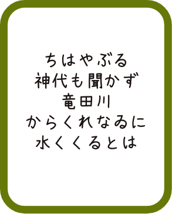

競技かるたとは、百人一首を使ったゲームのことです。百人一首と聞くと、
優雅な遊びをイメージする人も多いかもしれませんが、実際の競技かるたは、0.1秒を争う
スポーツで、その激しさから『畳の上の格闘技』と言われることもあります。

競技かるたは、年齢や性別に関係なく、誰でも楽しむことができます。実際に、子どもからご年配の方まで、幅広い世代の人が大会に出場しています。
小倉百人一首を使用するので、自然と日本文化に触れることが出来ます。また、勝負の中でも相手への礼儀や「譲り合いの精神」を重んじる日本的な考え方が用いられています。
百人一首とは、飛鳥時代から鎌倉時代までの100首の和歌の歌集です。
藤原定家という鎌倉時代を代表する歌人が、優れた和歌を選んで作られたと言われています。
百人一首は春、夏、秋、冬、恋の5つのテーマで分けることが出来ます。中でも恋をテーマと
した歌は43首もあり、多様な恋心が美しい言葉で巧みに綴られています。

いいいいいい

うううううう
うううううう

うううううう
うううううう
うううううう

うううううう
他の歌の意味も調べてみよう！